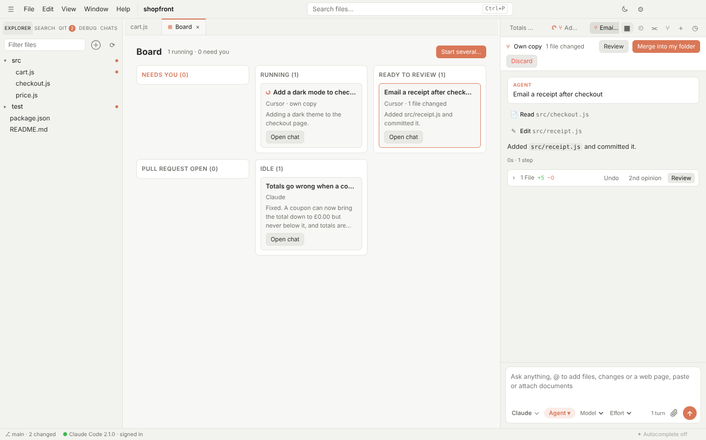

Codex, Gemini and Copilot GUI
Codex, Gemini and Copilot in one window
Every AI lab now ships a coding agent for the terminal. Switchdesk runs them all in one free desktop app, through each maker's own CLI, so you can switch agents mid-task and review every change the same way.
Free and open source · Windows, Mac and Linux · No account

Supported agents
Switchdesk starts each agent through the command its maker publishes, signed in the way that agent normally is. It never sees your logins.
OpenAI Codex
Your ChatGPT plan or an OpenAI API key, through codex app-server.
Gemini CLI
Your Gemini API key, through gemini --acp.
GitHub Copilot CLI
Your Copilot plan, through copilot --acp after copilot login.
Claude Code
Your Claude plan, with several accounts side by side.
Cursor, Kimi, Qwen and DeepSeek
Cursor's agent with your Cursor plan, Kimi with a Kimi Code membership, and Qwen Code for Qwen and DeepSeek keys.
One set of permissions
Rules you set once apply to every agent: commands to always allow, always block or always ask about.
Why one app for several agents?
Each agent has strengths, limits and usage caps. In Switchdesk, when one gets stuck or you run out of usage, pick another from the menu in the chat box and it carries on with the conversation so far. Or send the same task to several at once and keep the best result.
Questions
Is this an official Codex or Gemini app?
No. Switchdesk is independent and not affiliated with OpenAI, Google or GitHub. It runs their official CLIs, which you install and sign in to yourself.
Do I need all of them?
No. Use any one, and add others when you want. Switchdesk shows only the agents you've set up.
Does it cost anything?
Switchdesk is free and open source. Each agent uses your own plan or API key.
Can I use my own slash commands?
Yes. Command files from .claude/commands, .codex/prompts, .cursor/commands and .github/prompts work with every agent.
Try it on your own plan
Free, open source, and set up in a couple of minutes.
More: Claude Code GUI · Cursor alternative · Home